Last year I posted a blog post where we looked at a way to use elementary homotopy theory to hang a picture on the wall in a stupid way. The task was to hang a picture on two nails in such a way that if we pull one of the nails out, the picture falls down. “That is stupid” I hear you say, but premise is as premise does, or something similar quoted from Forrest Gump. I remarked then that I had seen the problem a couple years earlier, and I actually recently found were, which is how this blog post got made. I initially came across the problem from a video by a YouTube channel called GoldPlatedGoof. I watched the video again recently and decided to look around math-YouTube for other videos on the problem. There I came across one similar, and a bit less rigorous video by Matt Parker and Steve Mould. They solved it similarly to the original one, i.e. by using commutators, which is formalized by using the fundamental groups we did last time when posting about this. More interestingly I came across this video by Tom Scott and Jade Tan-Holmes which used a completely different (yet actually the same) method for solving it. Jade used knots and braid diagrams to produce a solution for the problem, which inspired me to make this post. We are also going to solve the problem using knots. The overall tactic will be roughly the same as Jades, but the method and the proof will be different. The post has turned out to be quite long, but there are many pictures, and not that much text!
To solve the problem we have to go a bit further than knots. We have to introduce a bit more complicated theory, called links. These mathematical objects are essentially multiple knots together in a system, possibly linked together, hence the name. Lets see an example. Last time we visually represented knots by their knot diagrams, and similarly we visualize links by their link diagrams, which are just several interplaying knot diagrams.
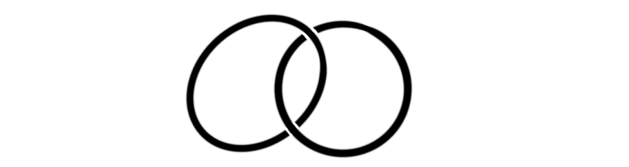
This link is called the Hopf-link, and consists of two unknots, ie. just two circles, linked together. A bit more complicated link is
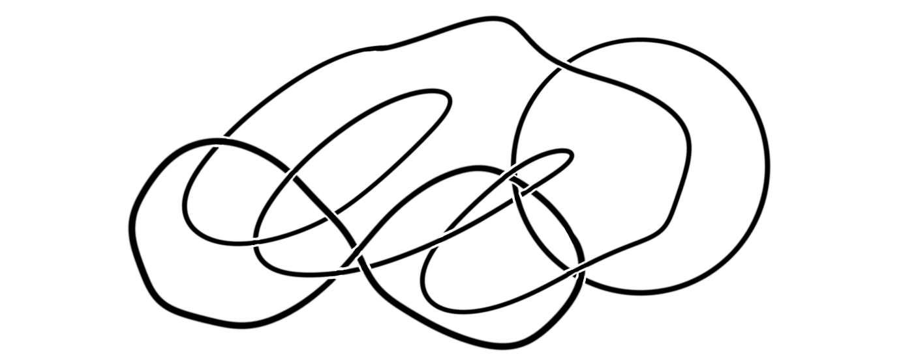
which is just a scribble, and does not have a name (that I know of). The different parts of the link is called the link components. The Hopf-link then has two components, both being the unknot, while the scribble has three components.
So, how can we use links to solve our problem? Lets remind our selves of the problem visually.
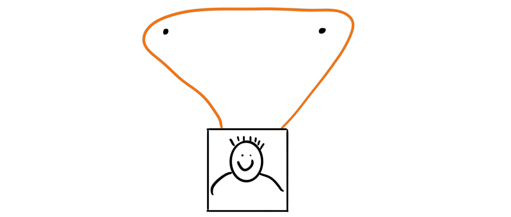
We need some way to create a link from the system consisting of the painting, the string and the two nails, i.e. a reformulation of the problem into link-theory. The way we are going to do this is to remove the non-important part of the system, as well as replacing some other parts by something equivalent. The only irrelevant part is actually the painting. It contributes nothing to the problem. If we hang a closed loop on the two nails, the problem is equivalent. A solution to one of them is automatically a solution to the other, hence we can remove the painting and just use the closed loop, i.e.
This produces one component of our link, but we still need more. An important insight here is that the closed loop can be wound either clockwise or anti-clockwise around each of the nails. Is there another objects that allows for two different ways to interact? There is, and it is in fact another closed loop, i.e. the unknot! We can understand this by seeing that a string can pass through the unknot either from below, or from above in the link diagram, like in the following pictures
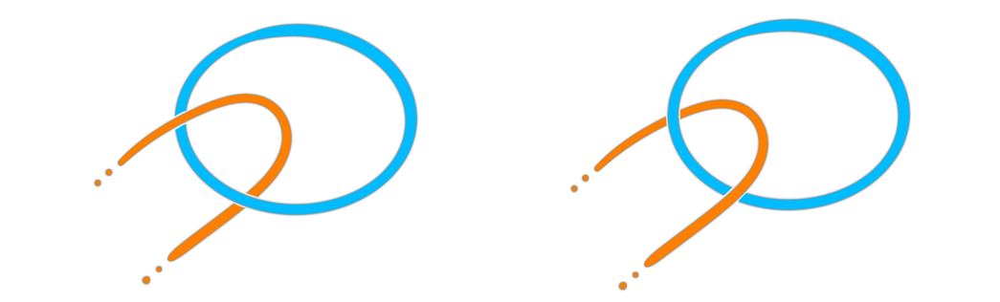
When winding a string around a nail we have the property that a clockwise followed by an anti-clockwise turn cancels each other out, similarly for the other way around. In passing a string in and out of an unknot we also have this property. If we first pass over, and then under we cancel out, and the result is no linking. This is maybe a bit hard to think about, so lets see it visually.
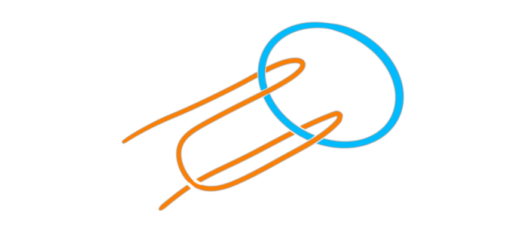
Hence we can replace the two nails in the original problem by two more unknots. To have a totally equivalent problem we need one more restriction. The two nails in the original problem have no way of interacting with each other, and hence we must require this from the two unknots we replaced them with as well. This means that without the closed loop initially holding the picture, the two remaining loops are unlinked, i.e.
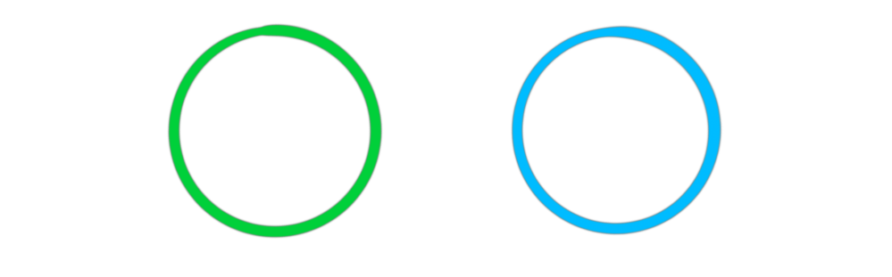
Now we finally have our equivalent system; three unknots where at least two of them are unlinked. Lets visualize what one attempt of hanging the picture would be in this equivalent reformulated system.
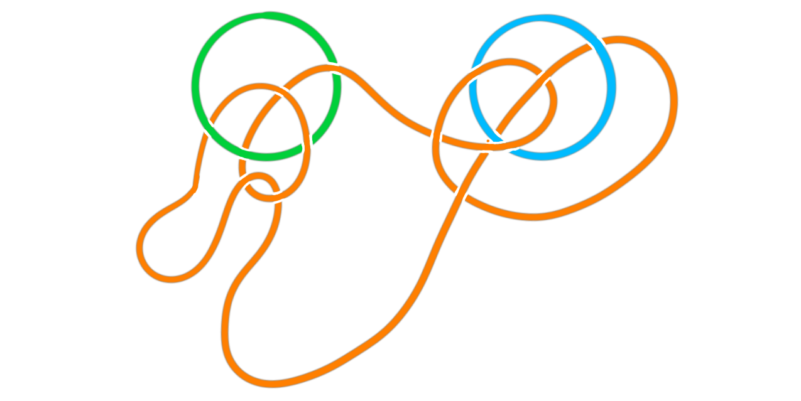
Ok, so how does this new system affect the statement of the problem? The reformulated problem becomes; Can we find a link consisting of three unknots such that if we remove one of them the two others are unlinked? Notice that this formulation satisfies the restriction we gave, as removing the loop originally holding the painting results in two unlinked unknots. It also means that if we remove one of the loops that used to be a nail, the two other loops, i.e. the painting-hanging loop and the other nail-loop are unlinked. This means that in the original formulation the picture would not be hanging on the remaining nail, and hence the picture would fall down. So, finding such a link would indeed solve the original problem.
There is in fact a famous link which satisfy this property. It is named after a medieval family who used the link as their family sigil. This is of course the Borromean link.
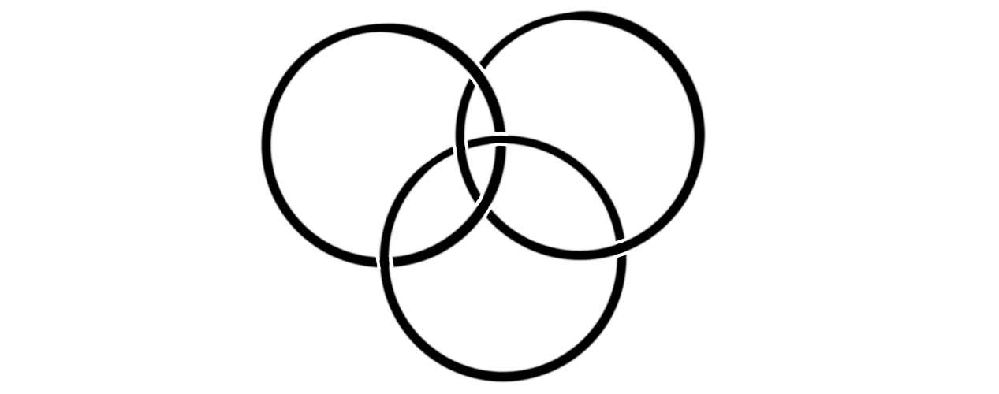
When we looked at knots last time we spent some time on tricolorability to prove that there exists knots that are not the unknot. The same theory applies to links. We can color the strands of each component in the link diagram, and the property of being tricolorable is invariant under the Reidemeister moves we can apply to the link. To quickly recap, a knot (or link) is tricolorable if we can color each strand in such a way that minimum two colors are used, and at every crossing, either all three colors are represented, or just one color is. We gave the following example last time of a tricolorable knot:

So, lets use this to prove that the Borromean links are linked, and that removing one components results in two unlinked unknots. This will show that the Borromean link is an answer to the problem. Lets first see that three unknots, is tricolorable. This is easy to se as we can simply color each of them by one color each.
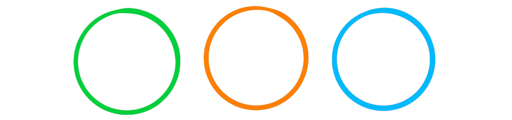
For the Borromean link to not be equivalent to the three unknots we must show that it is not tricolorable. This will mean that there is no set of Reidemeister moves we can do to turn the Borromean link into the three unknots, meaning that it is in fact linked. Lets try to tricolor it. It is actually a nice exercise to prove this, so if you want to try it your self I would recommend it before continuing.
We start by randomly assigning a color to a strand, for example
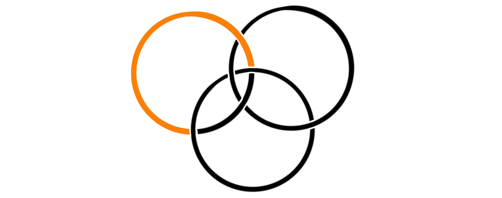
This strand will be one of the two strands that make up one of the unknots in the link. If we color the other part of the same unknot with the same color, we see immediately by following the tricolorability rules that every strand must be the same color. This does not produce a tricoloring as we must use at least two colors. Hence we must chose some other color for the second part of that circle.
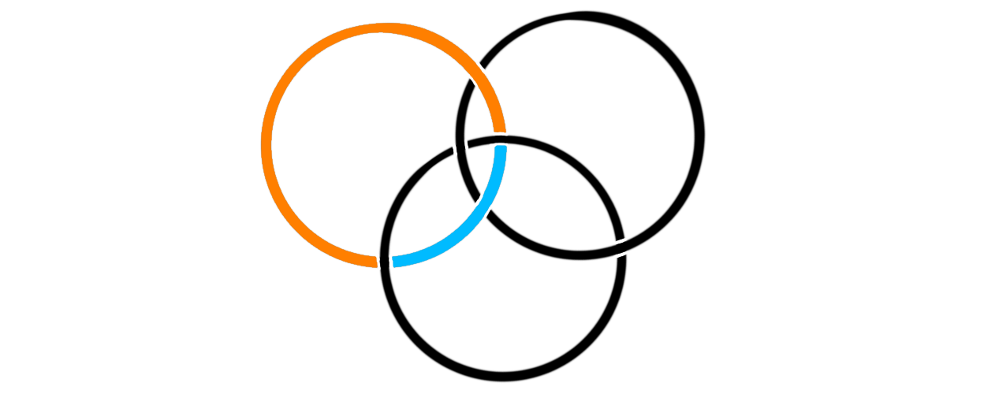
Now we have two crossings where we have two colors represented, meaning that the last strand in the crossings must be the last color. We are then left with the following
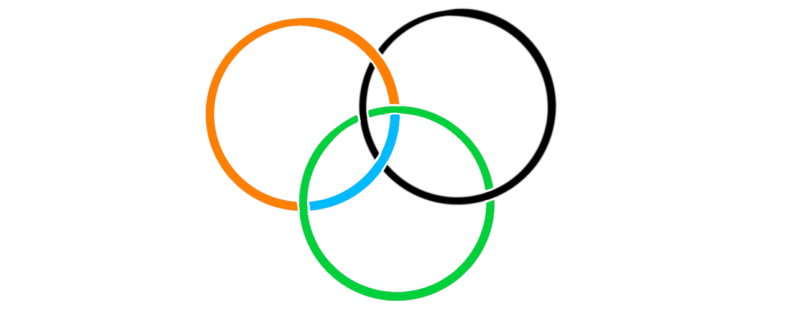
By the crossing furthest to the right we see that the biggest strand that is left must be green, but by the left-most crossing that is not colored, we see that the smallest strand must also be green, i.e.
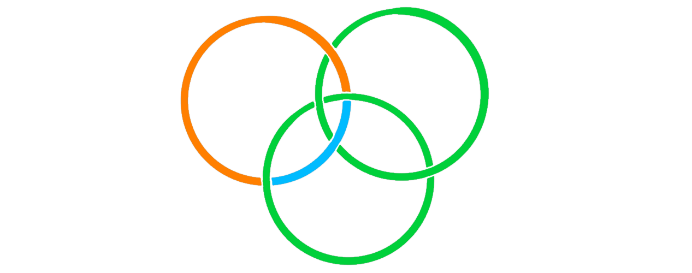
But this does not make a tricoloring of the link. This happens no matter which strand we started with, and no matter the color. Hence the Borromean link is not tricolorable, and can not be equivalent to the three unknots. What remains is to see what happens when we remove one of the loops from the link. We get
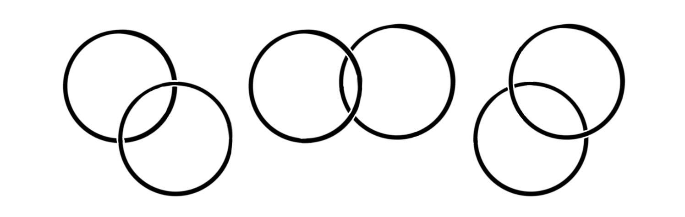
These we can easily see are all respectively equivalent to two unknots.
We have shown that the Borromean link satisfies being a linked link, such that removing any component results in two unlinked unknots. Hence it is a solution to the translated problem! We are not going to translate back to the original problem, because this produces the same commutator solution we did last time and hence is not very much fun. This post has already been long enough…
Further remarks
This problem has many interesting related concepts to it from many different fields of mathematics and other fields outside it. These two blog-posts have been focused on topology and a bit on algebra, but it shows up other places as well. For example in complex analysis, where it is related to the Pochhammer contour. This contour is just the curve we got last time by using the commutator in the fundamental group. I forgot to mention it last time, but the commutator path is homologous to the trivial path, but not homotopic to it, so this problem also serves as an insight into the differences between homology and homotopy.
The Borromean link we used today is also intimately connected with this problem. It is also connected to several other things, like balanced tournaments (rock, paper, scissors), higher linked atoms in physics and more. This interesting article sheds some relatively easily digestible light on the connection with rock, paper, scissors.